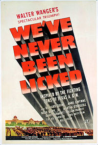

Style
Example 1
Required form fields are in red.
Example 2
Aggiepedia Department
Aggiepedia Department
Example 3
We've Never Been Licked (1943) is a World War II propaganda film produced by Walter Wanger and released by United Artists. Parts of the movie were shot on location at the Texas A&M University campus. Released in the UK under the title, Texas to Tokyo; re-released in the US as Fighting Command.
Example 4
Army brat Brad Craig enters A&M with a chip on his shoulder which upperclassmen quickly knock off. Once adjusted, Craig falls in love with a professor's beautiful daughter, only to find she is in love with his roommate. In the meantime, Craig unwittingly associates with Japanese spies (one played by William Frawley of I Love Lucy) bent on stealing a secret chemical compound developed in the A&M Chemistry Department. Craig is drummed out of the Corps for being a suspected accomplice to the spies, but he then bravely infiltrates the spy network to sabotage the Japanese war effort. Many A&M traditions are referenced in this film.